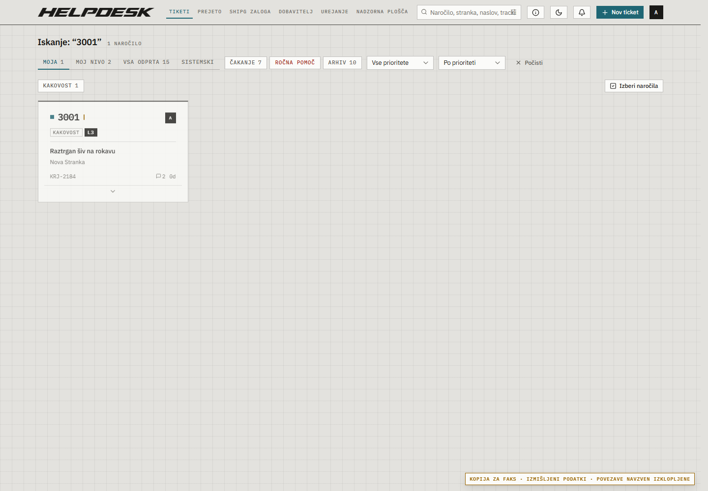
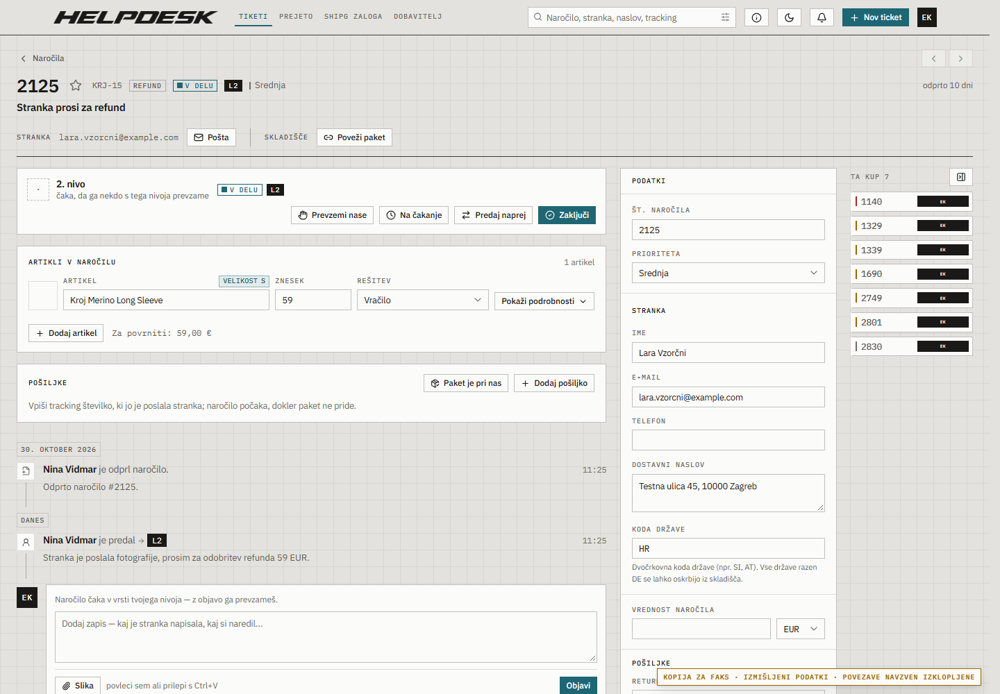
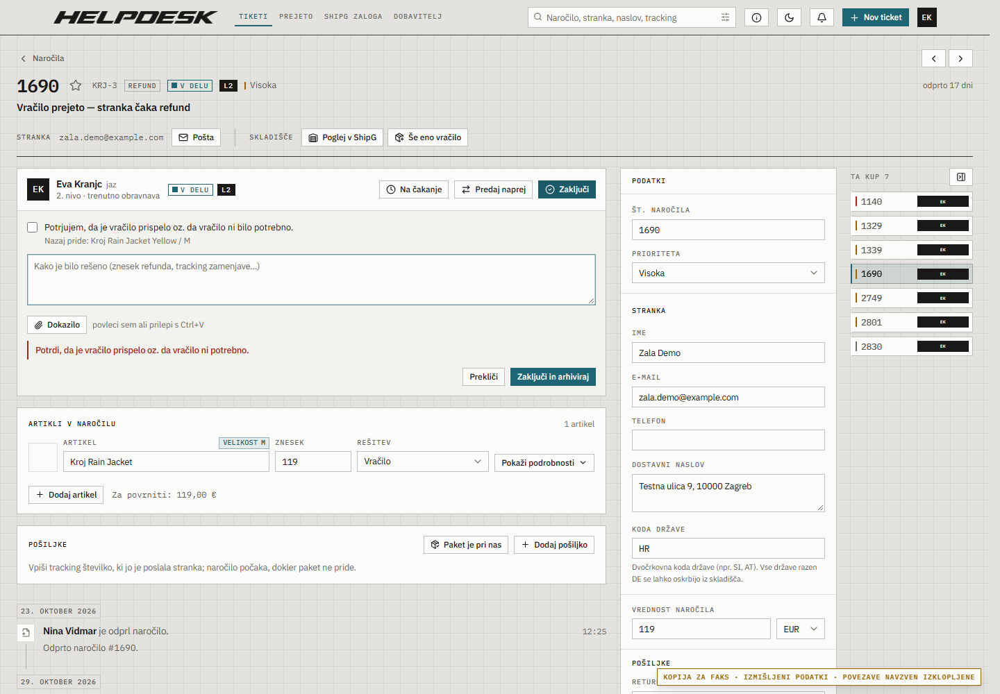
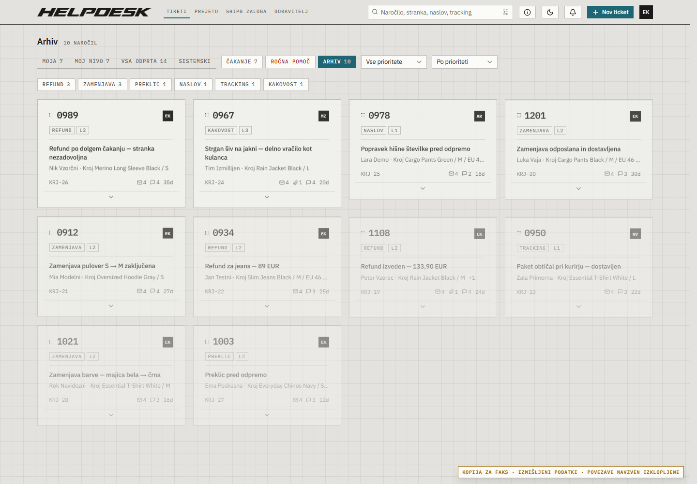
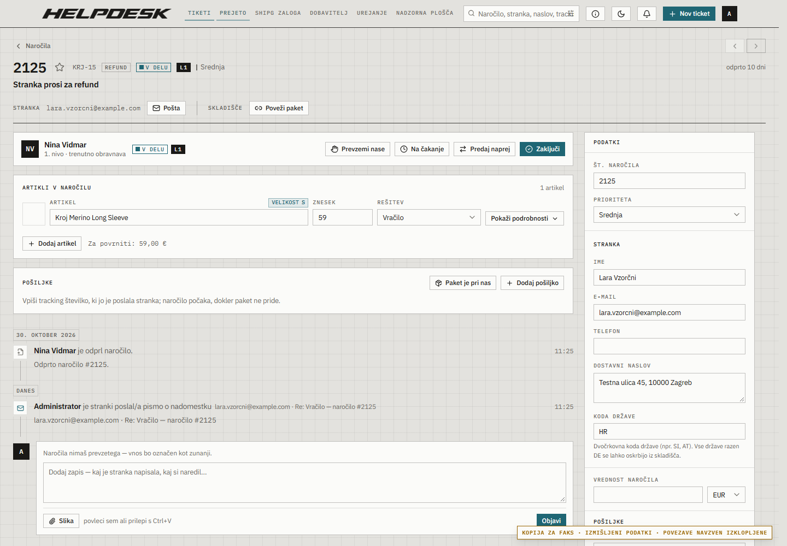
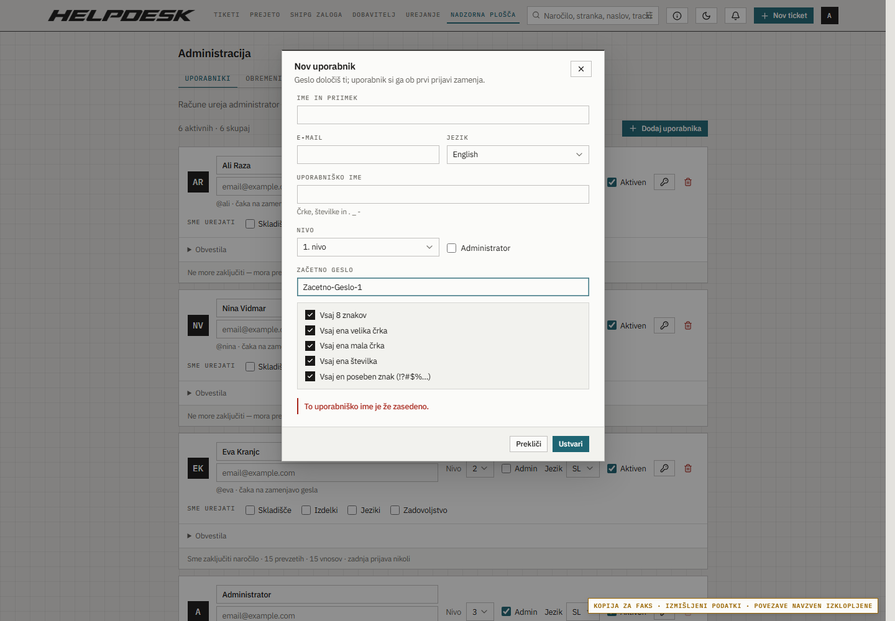

Poročilo avtomatiziranega funkcionalnega testiranja — HelpDesk
Vsebina:
- Povzetek
- Izbira orodja in utemeljitev
- Vključitev v cevovod
- Namestitev in nastavitev
- Avtomatizirani testni primeri
- Preverjanje testnih skript
- Preverjanje z namernimi napakami
- Rezultati izvedbe
- Ugotovljene napake
- Uporaba umetne inteligence
- Omejitve
- Priloge
1. Povzetek
Za avtomatizirano funkcionalno testiranje spletne aplikacije HelpDesk (Next.js 15, React 19, TypeScript, Prisma, SQLite) je izbrano orodje Playwright Test. Pet testnih primerov iz 2. naloge (TP-01 do TP-05, različica 3.0) je avtomatiziranih. Testne skripte je ustvaril agent UI, nato pa so bile preverjene po treh merilih iz navodil: zajetost korakov, predpogojev in podatkov; preverjanje pričakovanega rezultata; robustnost. Testi tečejo v cevovodu GitHub Actions ob vsakem pushu na vejo feature/naloga-2-funkcionalni-testi.
| Zagon | Okolje | Rezultat |
|---|---|---|
Način cevovoda (CI=true), 9. 11. 2026 | produkcijska gradnja, Chromium (headless) | 5/5 uspešnih |
| Ponovljivost: vsak test 2×, brez ponovitev ob neuspehu | enako | 10/10 uspešnih |
| Lokalni razvojni način | next dev, Google Chrome | 3/5; TP-02 in TP-03 padeta samo pri dodatnem preverjanju konzole zaradi znane napake NAP-01 |
| Preverjanje z namernimi napakami v aplikaciji | produkcijska gradnja | obe napaki zaznani na pričakovanem koraku |
2. Izbira orodja in utemeljitev
| Orodje | Jezik testov | Vključitev v cevovod | Oblika rezultatov | Ocena |
|---|---|---|---|---|
| Playwright Test | TypeScript / JavaScript | en ukaz playwright test; uradna predloga za GitHub Actions in Docker slika; sam zažene strežnik aplikacije (webServer) | izhodna koda, list, html, json, junit, github, posnetki, video, sledi | izbrano |
| Cypress | TS / JS | GitHub Action; vzporedni zagon prek plačljivega Cypress Cloud | spec/mocha; JUnit in HTML z dodatki | primerno, več omejitev (en zavihek, en izvor) |
| Selenium WebDriver | več jezikov | gonilniki in brskalniki ali Selenium Grid; testno ogrodje posebej | odvisno od ogrodja | preveč nastavljanja |
| Puppeteer | JS | samo knjižnica za upravljanje brskalnika | brez lastnih poročil | ni testno ogrodje |
Utemeljitev:
- Ujemanje z jezikom in ogrodjem. Testi so v TypeScriptu, kot aplikacija, in uvažajo njene nastavitve. Dokumentacija Next.js navaja Playwright kot priporočeno orodje za E2E teste.
- Samostojna priprava okolja. Playwright sam zažene aplikacijo na vratih 3100 z ločeno bazo
naloga2-e2e.db. Testi pred vsakim primerom bazo napolnijo s semenom, zato cevovod ne potrebuje zunanje baze, storitev ali skrivnosti. - Rezultati v oblikah za cevovod. Izhodna koda 0/1 ustavi cevovod; JUnit XML se prikaže kot tabela rezultatov v GitHubu; poročevalec
githubdoda opombe ob vrsticah kode; HTML poročilo s posnetki in sledmi se shrani kot artefakt; JSON je strojno berljiv. - Brezplačno in odprtokodno (Apache 2.0); vzporednost in deljenje testov ne zahtevata plačljive storitve.
3. Vključitev v cevovod
Cevovod je GitHub Actions (.github/workflows/e2e.yml), ker je repozitorij na GitHubu. Sproži se ob push na vejo feature/naloga-2-funkcionalni-testi, na kateri poteka delo za nalogo, ter ročno (workflow_dispatch). Na main se ne sproži.
push na feature/naloga-2-funkcionalni-testi
└─ posel »Tipi in enotski testi«
bun install → prisma generate → bun run typecheck → bun run test (281 enotskih testov)
└─ posel »Funkcionalni testi (Playwright)« (samo če je prvi uspel)
bun install → prisma generate → playwright install --with-deps chromium
→ bun run test:e2e (CI=true: prisma db push → next build → next start → TP-01 … TP-05)
→ vedno (tudi ob neuspehu):
artefakt playwright-report (HTML poročilo s koraki in posnetki)
artefakt test-results (posnetki, sledi, junit.xml, results.json)
preverjanje »Rezultati funkcionalnih testov« iz junit.xml
| Nastavitev | Lokalno | V cevovodu (CI=true) |
|---|---|---|
| Strežnik aplikacije | next dev | prisma db push + next build + next start |
| Brskalnik | nameščeni Google Chrome | Playwrightov Chromium |
| Ponovitve ob neuspehu | 0 | 1 (zazna nestabilne teste) |
test.only | dovoljen | prepovedan (forbidOnly) |
| Poročila | list, html, json, junit | + github (opombe in povzetek zagona) |
4. Namestitev in nastavitev
bun install # @playwright/test 1.64.1 je v devDependencies bunx playwright install chromium # brskalnik za način cevovoda (na Linuxu z --with-deps) bun run test:e2e # lokalno: next dev + Google Chrome $env:CI="true"; bun run test:e2e # kot v cevovodu: produkcijska gradnja + Chromium bunx playwright show-report # odpre HTML poročilo
Konfiguracija playwright.config.ts določa mapo testov tests/e2e, ločeno testno bazo in mapo prilog, slovensko okolje brskalnika (sl-SI), velikost okna 1440 × 1000, zaporedno izvajanje z enim delavcem (testi si delijo eno bazo), posnetek zaslona ob koncu vsakega testa, sled ob neuspehu in samodejni zagon strežnika.
5. Avtomatizirani testni primeri
Osnova so testni primeri iz docs/naloga2/testni-primeri-v3.md (različica 3.0). Vsak primer ima svojo skripto. Vsak korak testnega primera je v skripti en test.step z isto številko in opisom, zato so koraki vidni v poročilu in v cevovodu.
| ID | Testni primer | Funkcionalnost | Vrsta | Skripta |
|---|---|---|---|---|
| TP-01 | Odpiranje novega ticketa | F-01 | pozitiven | tests/e2e/tp-01-nov-ticket.spec.ts |
| TP-02 | Predaja ticketa drugemu nivoju | F-02 | pozitiven | tests/e2e/tp-02-predaja-nivoju.spec.ts |
| TP-03 | Zavrnitev zaključka brez potrditve vračila | F-03 | negativen | tests/e2e/tp-03-zakljucek-brez-potrditve.spec.ts |
| TP-04 | Odgovor stranki v demo nabiralniku | F-04 | pozitiven | tests/e2e/tp-04-odgovor-stranki.spec.ts |
| TP-05 | Zavrnitev podvojenega uporabniškega imena | F-08 | negativen | tests/e2e/tp-05-podvojeno-uporabnisko-ime.spec.ts |
| — | Skupna priprava, prijava, lokatorji | — | — | tests/e2e/support/helpers.ts |
6. Preverjanje testnih skript
6.1 Pregled prve različice skripte
Prvo avtomatizacijo (tests/e2e/functional.spec.ts, ena datoteka za vseh pet primerov) je v 2. nalogi pripravil agent Codex. Pregled po merilih iz navodil je pokazal naslednje pomanjkljivosti. Zato je skripto nadomestila nova različica.
| # | Ugotovitev | Merilo |
|---|---|---|
| 1 | V TP-03 je preverjanje Arhiva iskalo povezavo a[href="/orders/KRJ-3"], Arhiv pa povezave izpiše kot /orders/KRJ-n?view=archive. Preverjanje je zato uspelo vedno, tudi če bi bil ticket arhiviran. | pričakovani rezultat |
| 2 | Predpogoji niso bili preverjeni: naročilo 3001 ne obstaja (TP-01); KRJ-15 je na L1 pri Nini, Eva nima obvestil (TP-02); stanje KRJ-3 in artikel z rešitvijo Vračilo (TP-03); tri sporočila brez prevzemnika (TP-04); Nina na seznamu (TP-05). | predpogoji |
| 3 | Vmesni pričakovani odzivi niso bili preverjeni: odprt obrazec, izbrana vrsta, vpisane vrednosti in privzeti prevzemnik (TP-01, koraki 1–3); obrazec predaje (TP-02, k. 2); besedilo potrditvenega polja (TP-03, k. 1); vrednosti obrazca (TP-05, k. 2). | koraki |
| 4 | Status, nivo in lastnik so se preverjali kot »stran vsebuje besedilo« (body vsebuje »V delu«, »L3«, »Administrator«). To besedilo se pojavi tudi drugje (nit, meni), zato preverjanje ne dokazuje stanja ticketa. | pričakovani rezultat |
| 5 | »Brez osebnega lastnika« (TP-02) se je preverjal samo s prisotnostjo besedila čakanja, ne pa z odsotnostjo imena lastnika. | pričakovani rezultat |
| 6 | Končni rezultat TP-01 »obstaja en nov ticket za naročilo 3001« ni bil preverjen. | pričakovani rezultat |
| 7 | TP-05: nivo obstoječe Nine, prazen e-mail in neoznačena izbira Administrator niso bili preverjeni. | testni podatki |
| 8 | Lokatorja .last() za gumb »Predaj naprej« in polje gesla sta odvisna od vrstnega reda elementov. | robustnost |
6.2 Pregled nove različice po testnih primerih
Oznake: ✔ izpolnjeno, ◐ izpolnjeno z utemeljenim odstopanjem.
TP-01 Odpiranje novega ticketa
| Predpogoji ✔ | Sveže seme pred testom. Iskanje ?q=3001 (išče po vseh stanjih, tudi po Arhivu) vrne 0 zadetkov. Admin je prijavljen na strani Tiketi. |
| Testni podatki ✔ | Vsi podatki iz primera so v objektu data na vrhu skripte: Kakovost, 3001, naslov, e-mail, ime, Visoka, opis, prevzemnik Administrator. |
| Koraki ✔ | K1 dialog »Nov ticket«. K2 gumb Kakovost je izbran (aria-pressed), vrednosti vseh štirih polj. K3 prioriteta Visoka, prevzemnik Administrator, ime stranke. K4 URL oblike KRJ-n, naslov, ključ v glavi. K5 po osvežitvi številka naročila, vrsta, status V delu, nivo L3 in prioriteta v glavi ticketa; polja naročila, imena, e-maila, prioritete; prevzemnik v okviru lastnika; opis v niti natanko enkrat. |
| Pričakovani rezultat ✔ | Iskanje ?q=3001 vrne natanko en zadetek, ki vodi na ustvarjeni ključ. |
| Robustnost ✔ | Lokatorji po vlogi in imenu, omejeni na dialog oziroma glavo. Ključ ni vnaprej določen. |
TP-02 Predaja ticketa drugemu nivoju
| Predpogoji ✔ | Prva prijava Eve in Nine z zamenjavo gesla skozi vmesnik; Eva ima prazna obvestila (»Vse je pregledano«); izhodiščno stanje KRJ-15: 2125, V delu, L1, Nina Vidmar. |
| Testni podatki ✔ | »2. nivo — obvesti vse«, točen komentar, novo geslo Eve. |
| Koraki ✔ | K2 polje »Predaj komu«. K3 obrazec se zapre; L2, V delu; okvir lastnika kaže »2. nivo« in »čaka, da ga nekdo s tega nivoja prevzame« namesto imena; v niti natanko en dogodek »je predal« s komentarjem. K4 natanko eno obvestilo »#2125 · Nina Vidmar« s komentarjem. K5 obvestilo odpre KRJ-15; po osvežitvi L2 brez prevzemnika, komentar v niti. |
| Pričakovani rezultat ✔ | Pokrit v korakih 3–5. |
| Robustnost ✔ | Gumb za potrditev se išče znotraj obrazca z »Predaj komu« (namesto .last()). |
TP-03 Zavrnitev zaključka brez potrditve vračila
| Predpogoji ✔ | Eva prijavljena. KRJ-3: 1690, Refund, V delu, L2, Eva Kranjc; en artikel Kroj Rain Jacket, velikost M, rešitev Vračilo. Zapišeta se število dogodkov v niti in število ticketov v Arhivu. |
| Testni podatki ✔ | »Refund 119 EUR izveden.«, potrditveno polje neoznačeno. |
| Koraki ◐ | K1 potrditveno polje z natančnim besedilom iz primera in artiklom »Kroj Rain Jacket Yellow / M«. K2 besedilo vpisano, polje neoznačeno. K3 točno sporočilo napake, obrazec ostane odprt. K4 po osvežitvi V delu, gumb »Zaključi« je še na voljo, število dogodkov v niti nespremenjeno, vnesenega opisa ni v niti; v Arhivu enako število ticketov in ni naročila 1690. |
| Odstopanje | Primer pravi »preveri Arhiv z iskanjem naročila 1690«. Iskanje v aplikaciji (?q=) namenoma ne upošteva stanja (src/lib/issue-filter.ts: »iskanje gre tudi po arhivu«), zato bi vrnilo tudi odprti KRJ-3 in ne bi nič dokazalo. Skripta zato preveri seznam Arhiva neposredno. Predlog: korak 4 v naslednji različici primera spremeniti v »preveri seznam Arhiva«. |
| Robustnost ✔ | Potrditveno polje po dostopnem imenu, velikost po atributu title. |
TP-04 Odgovor stranki v demo nabiralniku
| Predpogoji ✔ | Admin prijavljen. Pogovor Lara Vzorčni, »Vračilo — naročilo #2125«, lara.vzorcni@example.com, povezava »Odpri ticket« na KRJ-15, tri sporočila, prevzemnik »Nedodeljeno«. |
| Testni podatki ✔ | Točno besedilo odgovora. |
| Koraki ✔ | K1 pogled »Odprto« izbran izrecno, pogovor natanko enkrat. K2 skripta počaka, da se naloži osnutek, ga izbriše in preveri, da polje vsebuje samo testni odgovor. K3 točna potrditev; sporočil je 4, zadnje je odhodno (podpora@kroj.example) z odgovorom, ki je na strani natanko enkrat. K4 pogovor v »Čakamo«, odgovor ohranjen, prevzemnik Administrator. K5 po osvežitvi odgovor ostane; »Odpri ticket« vodi na KRJ-15 (2125), lastnica Nina Vidmar. |
| Pričakovani rezultat ✔ | Pokrit v korakih 3–5. |
| Robustnost ✔ | Čakanje na osnutek prepreči tekmo med nalaganjem osnutka in vnosom. Navigacija se preverja z expect(page).toHaveURL(), ker Next.js menja naslov brez polnega nalaganja strani. |
TP-05 Zavrnitev podvojenega uporabniškega imena
| Predpogoji ✔ | Admin prijavljen; »6 aktivnih · 6 skupaj«; vrstica @nina (Nina Vidmar, nivo 1). |
| Testni podatki ✔ | Ime, uporabniško ime, Slovenščina, 1. nivo in geslo vpisani in preverjeni; e-mail prazen; Administrator neoznačen. |
| Koraki ✔ | K1 zavihek »Uporabniki«. K2 dialog »Nov uporabnik« in vse vrednosti. K3 točno opozorilo, dialog ostane odprt. K4 dialog se zapre; po osvežitvi enak povzetek, natanko 6 polj »Ime«, med njimi ni »Nina Dvojnik«, »Nina Vidmar« natanko enkrat z istim nivojem. |
| Pričakovani rezultat ✔ | Pokrit v korakih 3–4. |
| Robustnost ✔ | Vrstica uporabnika se išče po oznaki »@nina ·«, ne po položaju na seznamu. |
6.3 Robustnost (skupno za vse skripte)
- Izbira elementov: lokatorji po vlogi in dostopnem imenu (
getByRole,getByLabel,exact: true), omejeni na vsebnik (dialog, obrazec, glava ticketa). Za dva dela strani brez dostopnega imena sta v aplikacijo dodana atributadata-testid="issue-header"(glava ticketa) indata-testid="issue-owner"(okvir lastnika). To je edina sprememba aplikacije in ne vpliva na prikaz. - Čakanje: nobena skripta ne uporablja fiksnih pavz (
waitForTimeout). Vsa preverjanja sexpectsamodejno ponavljajo do 15 s. - Neodvisnost: shema baze se pripravi enkrat, seme pa pred vsakim testom (samodejni fixture
freshDatabase). Vsak test ima nov kontekst brskalnika brez prijavne seje, kar nadomesti odjavo po primeru. Gesla se pripravijo v vsakem testu znova. Noben test ne potrebuje rezultata drugega; to potrjuje zagon z vsakim testom dvakrat zapored (10/10). - Napake brskalnika: fixture
browserErrorszbere napake JavaScripta inconsole.errorter test podre, če obstajajo. To je dodatna zahteva, ki ni del testnih primerov.
7. Preverjanje z namernimi napakami
Da bi preverili, ali skripte res preverjajo pričakovani rezultat in ne le nalaganja strani, sta bili v aplikacijo začasno vneseni dve napaki. Testi so tekli proti produkcijski gradnji, nato je bila koda povrnjena.
| Namerna napaka | Mesto v kodi | Pričakovano | Rezultat |
|---|---|---|---|
| Varovalka izklopljena: zaključek brez potrditve vračila uspe | src/lib/actions/issues.ts, pogoj returnConfirmed | TP-03 pade | TP-03 pade v koraku 3: sporočila »Potrdi, da je vračilo prispelo …« ni |
| Predaja nivoju ohrani osebnega lastnika | src/lib/actions/issues.ts, assigneeId: null → me.id | TP-02 pade | TP-02 pade v koraku 3: pričakovano »2. nivo«, prejeto »Nina Vidmarjaz« |
Skripta iz 2. naloge druge napake v koraku 3 ne bi zaznala, ker je preverjala samo prisotnost besedila čakanja.
8. Rezultati izvedbe
Zagon v načinu cevovoda 9. 11. 2026 ob 11:24 (Windows 11, Playwright 1.64.1, Chromium headless shell 156, produkcijska gradnja, prikaz 1440 × 1000, sl-SI). Skupno trajanje 1 min 43 s, od tega večina gradnja aplikacije. JUnit: tests="5" failures="0". V nobenem testu ni bilo napak JavaScripta ali konzole.
| ID | Status | Trajanje | Dejanski rezultat | Dokazila |
|---|---|---|---|---|
| TP-01 | Uspešen | 5,0 s | Ticket za naročilo 3001 je ustvarjen (v tem zagonu KRJ-2184); po osvežitvi so vrsta Kakovost, prioriteta Visoka, status V delu, L3, prevzemnik Administrator, podatki stranke in opis v niti ohranjeni; za 3001 obstaja natanko en ticket. | posnetek |
| TP-02 | Uspešen | 8,8 s | KRJ-15 preide na L2 brez osebnega prevzemnika, v niti je dogodek predaje s komentarjem; Eva prejme eno obvestilo in prek njega odpre KRJ-15. | posnetek |
| TP-03 | Uspešen | 4,8 s | Zaključek brez potrditve je zavrnjen s točnim sporočilom; KRJ-3 ostane V delu, nit je nespremenjena, Arhiv ostane pri 10 ticketih brez 1690. | zavrnitev, Arhiv |
| TP-04 | Uspešen | 4,3 s | Odgovor je poslan in shranjen natanko enkrat kot četrto, odhodno sporočilo; pogovor je v »Čakamo« pri Administratorju; povezava vodi na KRJ-15, lastnica ostane Nina Vidmar. | posnetek |
| TP-05 | Uspešen | 3,9 s | Podvojeno ime nina je zavrnjeno s točnim opozorilom; po osvežitvi je še vedno 6 uporabnikov, Nine Dvojnik ni, Nina Vidmar je nespremenjena. | zavrnitev, seznam |








9. Ugotovljene napake
| ID | Opis | Vpliv na teste | Prioriteta | Stanje |
|---|---|---|---|---|
| NAP-01 | React pri seznamu ticketov (Nina, Eva) izpiše »Each child in a list should have a unique "key" prop«; izvor BulkOrderGrid, otrok iz OrdersPage. Ugotovljena že v 2. nalogi. | V razvojnem načinu TP-02 in TP-03 padeta pri dodatnem preverjanju konzole, vsi funkcionalni koraki so uspešni. Produkcijska gradnja (cevovod) opozorila ne izpiše. | nizka | odprta |
Pri pregledu je bila ugotovljena še neskladnost testnega primera z aplikacijo (TP-03, korak 4 — iskanje ne upošteva stanja, glej poglavje 6.2). To ni napaka aplikacije, ampak predlog za popravek testnega primera.
10. Uporaba umetne inteligence
- Agent: Claude Code (Anthropic), model Claude Opus 5.5.
- Uporaba: izbira in utemeljitev orodja, nastavitev Playwrighta in cevovoda, pisanje testnih skript, raziskovanje vmesnika (drevo dostopnosti strani na vsakem koraku), preverjanje z namernimi napakami, priprava tega poročila.
- Preverjanje dela agenta: skripte so bile pregledane korak za korakom proti testnim primerom po treh merilih iz navodil (poglavje 6). Da skripte zaznajo napačno delovanje, je potrjeno z namernimi napakami (poglavje 7), neodvisnost in stabilnost pa z dvakratnim zagonom brez ponovitev. Ob vsaki spremembi sta bila pognana tudi
bun run typecheckin 281 enotskih testov.
11. Omejitve
- Testiran je samo namizni Chromium oziroma Chrome; mobilni prikaz, Firefox in WebKit niso vključeni.
- Pregled testnih primerov iz 3. naloge ni shranjen v repozitoriju; osnova je različica 3.0 iz 2. naloge.
- Pošiljanje zunanje e-pošte in finančne transakcije v lokalni kopiji niso mogoči; TP-04 preverja demo nabiralnik.
- Rezultati v tem poročilu so iz lokalnega zagona v načinu cevovoda; zagon na GitHub Actions se izvede ob pushu na vejo
feature/naloga-2-funkcionalni-testi.
12. Priloge
| Datoteka | Vsebina |
|---|---|
docs/naloga4/izbira-orodja.md | Izbira orodja, cevovod in navodilo za nastavitev (podrobneje) |
docs/naloga4/avtomatizacija-testnih-primerov.md | Pregled skript po testnih primerih (Markdown različica poglavij 6–7) |
docs/naloga4/dokazila/ | Posnetki zaslona, junit.xml, results.json zadnjega zagona |
tests/e2e/ | Testne skripte in README.md za zagon |
playwright.config.ts | Konfiguracija Playwrighta |
.github/workflows/e2e.yml | Cevovod GitHub Actions |
docs/naloga2/testni-primeri-v3.md | Testni primeri TP-01 do TP-05 |